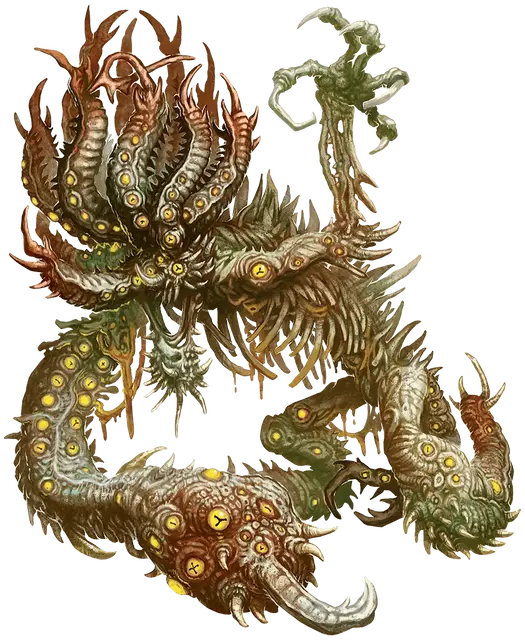

Невыразимый ужас
Unspeakable Horror
Огромный Монстр

Класс Доспеха 15 (природный доспех), 17 (только Аберрантный доспех)
Хиты 95 (10к10 + 40)
Скорость 40 футов
| мод | спас | ||
|---|---|---|---|
| СИЛ | 21 | +5 | +5 |
| ЛОВ | 13 | +1 | +1 |
| ТЕЛ | 19 | +4 | +7 |
| мод | спас | ||
|---|---|---|---|
| ИНТ | 3 | −4 | −4 |
| МДР | 14 | +2 | +5 |
| ХАР | 17 | +3 | +3 |
Навыки Восприятие +5
Иммунитет к состояниям окаменение
Чувства тёмное зрение 60 футов, пассивное Восприятие 15
Опасность 8 (3900 опыта)
Бонус мастерства +3
Особенности
Иммунитет к состоянию. окаменение (только Аберрантный доспех).
Образованный туманами. При создании состав тела ужаса принимает одну из четырех форм: Аберрантный доспех, Отвратительные конечности, Податливая масса или Сочащиеся органы. Эта форма определяет некоторые черты в этом блоке статистики.
Аморфность (только Податливая масса). Ужас может перемещаться сквозь пространство шириной в 1 дюйм без протискивания.
Желчное тело (только Сочащиеся органы). Любое существо, которое прикасается к ужасу или попадает в него атакой ближнего боя, получает 5 (1к10) урона кислотой.
Неумолимый шаг (только Отвратительные конечности). Ужас может перемещаться через пространство другого существа. В первый раз в ход когда ужас входит в пространство существа во время этого перемещения существо должно преуспеть в броске Силы Сл 16 или станет сбитым с ног.
Действия
Мультиатака. Ужас делает две атаки конечностями.
Конечность. Рукопашная атака оружием: +8 к попаданию, досягаемость 5 фт., одна цель. Попадание: 21 (3к10 + 5) дробящего урона.
Заряд порчи (перезарядка 5-6). Ужас излучает некротическую энергию в 30-футовом конусе. Каждое существо в этой области должно совершить спасбросок Телосложения Сл 15, получая 45 (7к12) урона некротической энергией при провале или вдвое меньше урона при успехе.
Описание
Несказанное, наполовину сформировавшееся зло скрывается среди Туманов, еще не реализованных фантазий Тёмных Сил и остатков разрушенных владений. В то время как такие кошмары обычно проявляются не более чем впечатлениями, шепотом или туманными видениями среди туманности, таинственные вихри в Туманах иногда накапливают такие мерзости, заставляя их срастаться в уникальные, уродливые тела, не связанные с законами разума или реальности. Такие невыразимые ужасы могут продолжать шастать в туманном нижнем мире между Доменами Ужаса, или они могут прокрасться в другие планы, чтобы утолить непередаваемый голод.
Настройка ужаса
Невыразимый ужас имеет одну из четырех конфигураций тела, определяемых путем броска по таблице "Конфигурации тела". Вы можете совершить бросок по таблице "Конечности", чтобы настроить их позже, а результаты из таблицы "Заряд порчи" заменяют это действие в блоке статистики. Если результаты из нескольких таблиц не сочетаются, выберите предпочтительный результат самостоятельно.
Результаты бросков по этим таблицам должны быть разнообразными, поэтому вы вольны описывать детали формы невыразимого ужаса и взаимодействия между его частями, как вам заблагорассудится. Чем больше диссонируют между собою и неожиданны части ужаса, тем более пугащими они могут быть.
Туманные ужасы
Некоторые из тех, кто забредает в Земли Туманов, стараются спрятаться в тумане. Возможно, они даже захотят жить среди бесконечной туманности, считая его предпочтительнее ужасов в другом месте. Но Туманы, дрейфующие между Доменами Ужаса, далеко не безопасны и далеко не пусты.
Туманные ужасы — это бестелесные духи ужаса, сущности, принимающие форму страхов тех, с кем они сталкиваются. Туманные ужасы используют блок статистики невыразимого ужаса с особенностью Податливой массы тела, из-за чего они кажутся состоящими из живого тумана. Остальные подробности внешности туманного ужаса возникают из страхов тех, кто находится в радиусе 100 футов от него. Это может привести к тому, что туманный ужас примет форму, которая сочетает в себе множество страхов, когда он сталкивается с группой, например, волк со змеями вместо глаз или утонувший гигант, который напоминает отчужденного родителя. Туманные ужасы не могут долго существовать за пределами Туманов: после 1к4 раундов за пределами Туманов они теряют целостность и снова превращаются в безвредный пар.
Конфигурации тела
| к4 | Тело |
| 1 | Аберрантный доспех. Тело ужаса бронировано окаменелым деревом, инопланетным кристаллом, ржавыми механизмами, скульптурным камнем или экзоскелетом. |
| 2 | Отвратительные конечности. Тело ужаса может похвастаться паучьими ногами, многосуставчатыми придатками или извивающимися щупальцами. |
| 3 | Податливая масса. Тело ужаса состоит из сгустка бескостной плоти, теневых щупалец или тумана. |
| 4 | Сочащиеся органы. Тело ужаса вздулось из-за паразитов, имеет обнажённые внутренности или студёнистое покрытие — возможно потому, что оно вывернуто наизнанку. |
Заряд порчи
| к4 | Тело |
| 1 | Морочащая порча (перезарядка 5-6). Ужас излучает волну магии, изменяющей сознание. Каждое существо в радиусе 30 футов от ужаса должно совершить спасбросок Мудрости Сл 15, при провале получая 33 (6к10) урона психической энергией и становясь недееспособным до конца своего следующего хода или получая вдвое меньше урона при успехе. |
| 2 | Желчная порча (перезарядка 5-6). Ужас выдыхает кислую желчь в 60-футовой линии шириной 5 футов. Каждое существо в этой линии должно преуспеть в спасброске Ловкости Сл 15, иначе станет покрыто желчью. Существо, покрытое желчью, получает 31 (7к8) урона кислотой в начале каждого своего хода, пока оно или другое существо действием не соскребёт или не смоет желчь, которая покрывает его. |
| 3 | Окаменяющая порча (перезарядка 5-6). Ужас выдыхает окаменяющий газ в 30-футовом конусе. Каждое существо в этой области должно преуспеть в спасброске Телосложения Сл 15 или получит 14 (4к6) урона некротической энергией и станет опутанным, поскольку оно начнет превращаться в камень. Опутанное существо должно повторить спасбросок в конце своего следующего хода. При успехе эффект на цели заканчивается. При провале цель окаменевает до тех пор, пока не будет освобождена заклинанием высшее восстановление [greater restoration] или другой магией. |
| 4 | Крадущая реальность порча (перезарядка 5-6). Ужас извергает волну искажающей восприятие энергии. Каждое существо в радиусе 30 футов от ужаса должно совершить спасбросок Мудрости Сл 15. При провале цель получает 22 (5к8) урона психической энергией и становится оглохшей до конца своего следующего хода. Если спасбросок провален на 5 или более, цель также становится ослепленной до конца своего следующего хода. |
Конечности
| к4 | Атака |
| 1 | Костяной клинок. Конечность ужаса заканчивается лезвием из кости, которое наносит рубящий, а не дробящий урон. Кроме того, оно совершает критическое попадание при выпадении 19 или 20 и бросает кости урона при этом трижды, а не дважды. |
| 2 | Коррозийная ложноножка. Атака конечностью ужаса наносит дополнительный урон кислотой 9 (2к8). |
| 3 | Хватающее щупальце. Конечность ужаса — это цепкое щупальце. Когда ужас поражает существо этой конечностью, существо также становится схваченным (Сл высвобождения 16). Конечность может удерживать в захвате только одно существо одновременно. |
| 4 | Ядовитая конечность. Конечность ужаса наносит колющий, а не дробящий урон. Кроме того, когда ужас поражает существо этой конечностью, существо должно преуспеть в спасброске Телосложения Сл 15, иначе получит 7 (2к6) урона ядом и станет отравленной до конца своего следующего хода. |